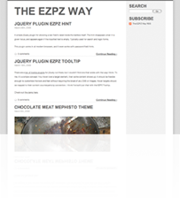
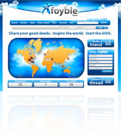
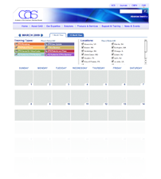
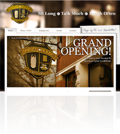
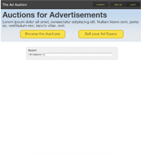
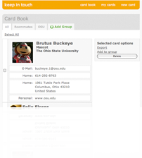

The EZPZ Way
This is my personal blog. I designed a custom theme I named "Chocolate Meat" for Mephisto. I also customized the code highlighting engine.

Foyble
This is a social network I built with Rails. It features a Google Map with custom tiles, geocoding services, full text search indexing, and much more. I worked on this project for a Switchbox Inc. client and it is currently in beta.

CAS Calendar
Given a photoshop mock-up, I developed an AJAX and javascript intensive calendar. There is also an admin interface for dynamically creating the event categories and locations for filtering. I worked on this project for a Switchbox Inc. client.

Barley House
Per the client's requirements, I integrated their design into Drupal. I also assisted them with some of the complex HTML and CSS. I worked on this project for a Switchbox Inc. client.

The Ad Auction
An auction site I designed and developed. This site is just a prototype for now.
